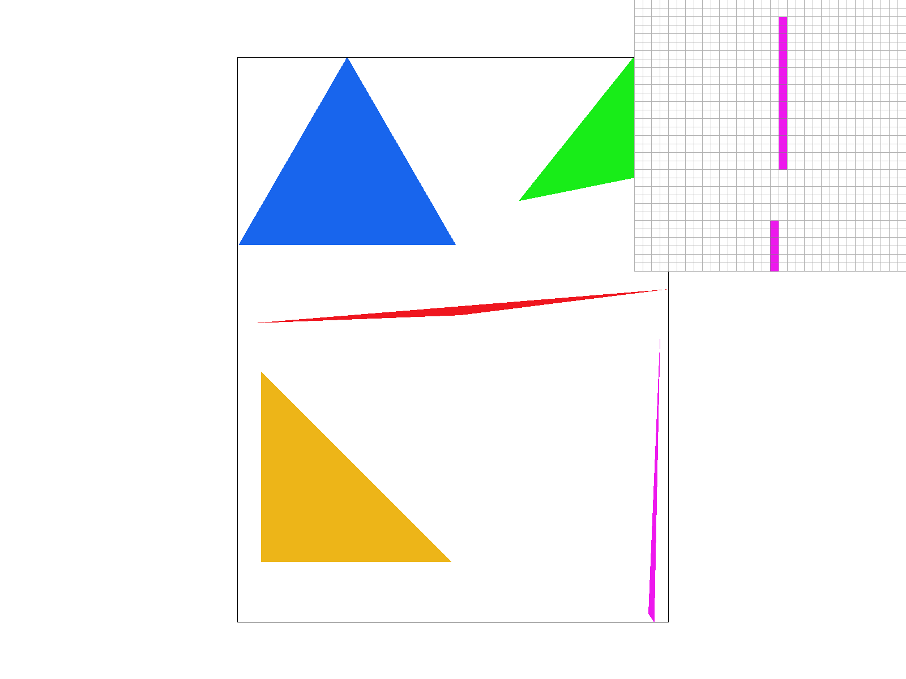
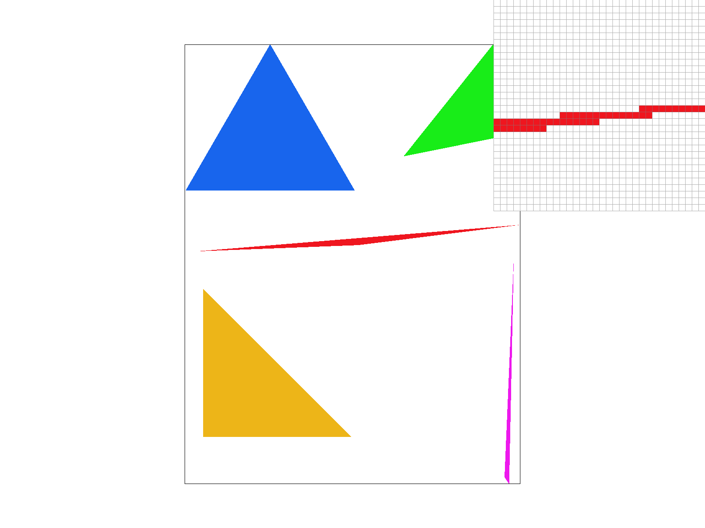
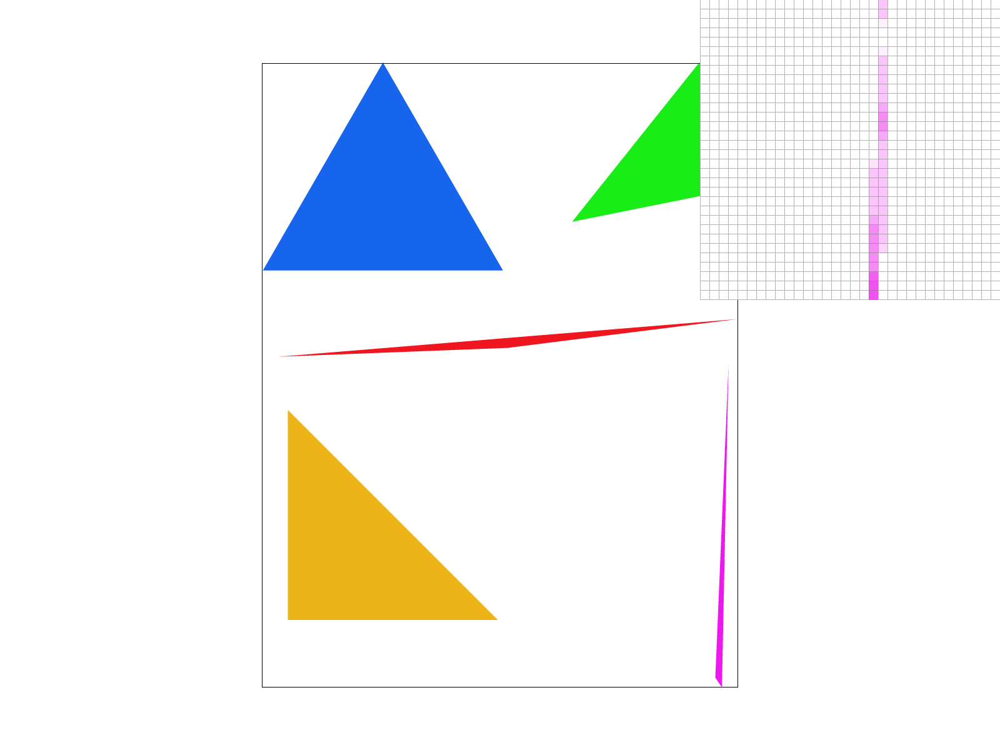
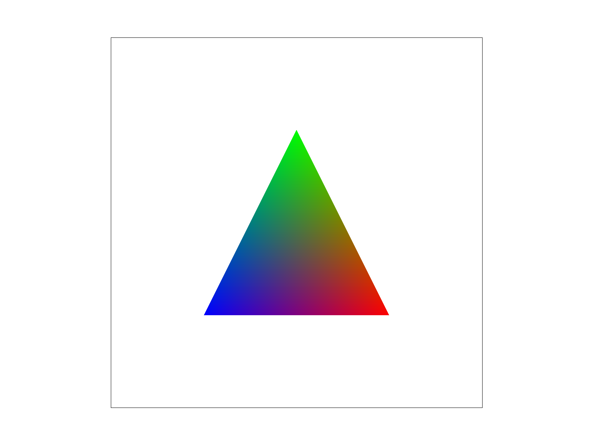
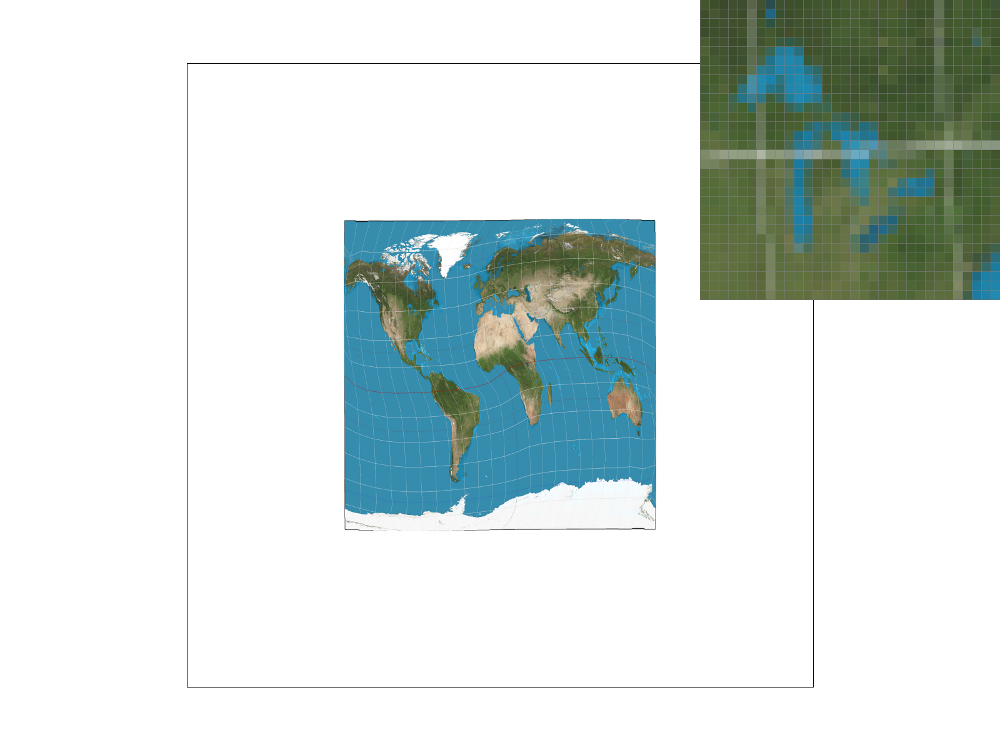
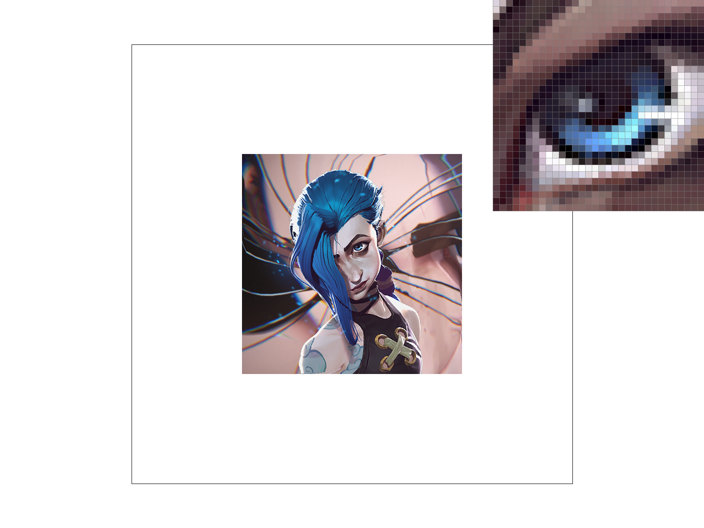
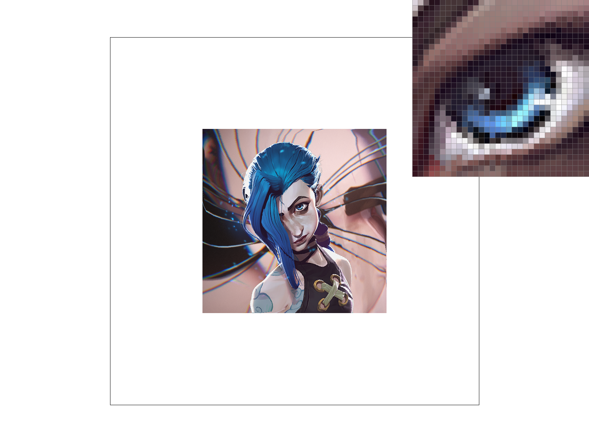
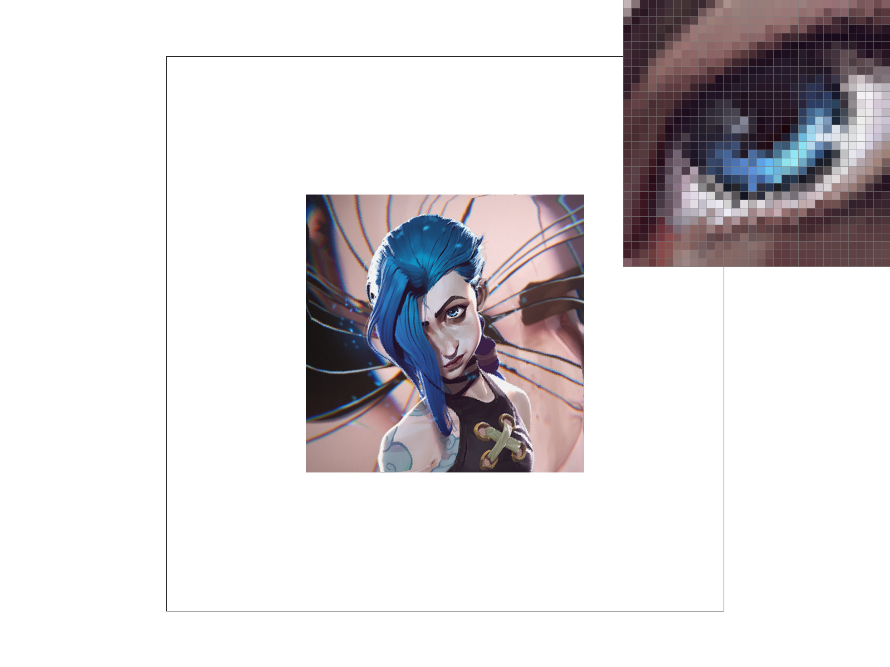

Overview
The project can be broken down into two subparts:
- Section I: Rasterization
- Section II: Sampling
In the first part of the project, I build a rasterization tool for triangles. After a picture is triangulated, we can use the rasterization tool to fill in color, implement transformations. In the second part of the project, I implemented various sampling methods to improve image quality and avoid aliasing. Sampling Method includes: Pixel Sampling and Level Sampling using Mipmap.
Section I: Rasterization
Part 1: Rasterizing single-color triangles
For this problem, we are given the input of three pairs of coordinates.
- First, I convert all three points into Vector3D variables and determine the orientation of the three points by finding the direction of cross product. If the three vectors are counter-clockwise, we swap two of the elements to make it clockwise to make computation easier.
- Then I convert the three point into line vectors and find the normal vector for each line respectively.
- After that, I create a bounding box which the four vertext consists of maximum and minimum of the coordinates of the three vertices.
- Eventually, I traverse through all points in the bounding box to see if any point satisfies the three line test. If satisfied, we will called the rasterize_point() function to rasterize the pixel.
My algorithm is checking exactly the points in the bounding box of the given triangles as I calculate the maximum and minimum of x,y coordinates of all three vertices and form a bounding box.
|

|

|
Part 2: Antialiasing triangles
For this problem, we are to improve the quality of triangles by Antialiasing.
- First, I increase the sample buffer size by a factor of sample rate so that when we are supersampling we are able to fit all the color data into the array.
- Then within the for loop of regular sampling, I divided the point into #(sample_rate) of subpoints and conduct three line tests for each subpoint.
- If the subpoint does not pass three line tests, the color will default to white. Otherwise I create a method super_sampling_fill_pixel() to fill in the color linearly. For a single point, the sample buffer store the subpoint information as [subpoint1_color,subpoint2_color,subpoint3_color,subpoint4_color] for a sample rate of 4
- After traversing all the points in svg, we need to downsampling the sample buffer to frame buffer. I do so by traversing the sample buffer with a step size of 4. Then,I add up RBG value of subpoints and divide by the sample rate. After that,I put the value back to the frame buffer,which will be rendered on screen.
- I make adjustment to normal fill_pixel(), which is used for rasterize_line() by adding the same color (sample_rate) times on the sample buffer to avoid error when increasing sample rate
Data Structure (An example of sample rate = 4):
sample_buffer = [(0,0)_subpoint_1,(0,0)_subpoint_2,(0,0)_subpoint_3,(0,0)_subpoint_4,(0,0)_subpoint_1,(1,0)_subpoint_2,(1,0)_subpoint_3,(1,0)_subpoint_4, ....]
|
|
|
|
|

|
Part 3: Transforms
My robot is climbing on a mounting and reaching a spot where he can grab. I basically rotate and adjust the arms of the robots and make it look like it is stretching out to reach
Section II: Sampling
Part 4: Barycentric coordinates
My understanding of Barycentric coordinate is that the coordinate system is a representation of porportionality bounding by the three vertices. α, β, γ are measures of porportion of each vertex playing in effect of the specific point. In Cartesian coordinate, a point in a triangle can be characterized as (x,y) for 2D plane, In Barycentric view, a point inside the triangle can be characterized by V = α * Va + β * Vb + γ * Vc where α + β + γ = 1 and Va, Vb, Vc are the three vertex.
One of the application of Barycentric coordinate is color mapping. In Figure 11, I set the three vertices of the trinalge to be Red,Green,Blue which corresponds to Va=(1,0,0),Vb=(0,1,0),Vc=(0,0,1). For any point inside the triangle, the point can be characterized by V = α * Va + β * Vb + γ * Vc. V will therefore be a unique combination of color based on the Barycentric coefficient. For example if α = β = γ = 1, the point will show color of rgb(85.3,85.3,85.3) approximately
|

|

|
Part 5: "Pixel sampling" for texture mapping
Pixel sampling is a sampling technique that look for the relative position in the texture map and sample it back to the frame buffer.
- First, for each pixel, I find the Barycentric coefficient.
- Then I use the Barycentric coefficient to calculate the relative position of the pixel on uv(texture) map.
- Then, I apply the pixel sampling method given to calculate the color in the frame buffer
Nearest: this sampling method finds the neartest pixel on the texture map given a pair of u-v coordinate and directly return that value
Bilinear: this sampling method takes the neighbouring four pixels, which forms a bounding box. Then we find the weighted average of all four by using lerp and pass back the value. - Finall, pass the data back and fill in the sample buffer
|
|

|
|
|
|
Comparing Figure 13 and Figure 15, with the same sampling rate at 1, neartest sampling technique will create more color jump within some continous color texture. When we increase the sample rate which are shown in Figure 14 and Figure 16, supersampling mitigate the discontinuity in color but there are still jaggies
The difference between the two sampling method will increase when the texture coordinate and screen coordinate vary drastically. For exmaple, The image I am currently rendering has a twisting coordinate. Therefore, nearing sampling method might sample a texture pixel that are extremely far from the pixel in screen space. However, the bilinear method will use 4 pixel points to lerp the final texture pixel which will turn out to be more accurate.
Part 6: "Level sampling" with mipmaps for texture mapping
Level sampling is a way of sampling texture from mipmap which offers different levels of precision. When we compare the pixel size between world space and texture map, if there is a magnification, we will sample from the relatively high resolution mipmap level. When there is a minification which would potentially result in Moire Pattern, we will sample the low resolution mipmap level.
- First, we need to calculate the level of certain pixel using the formula D = log2(max(sqrt((du/dx)^2 + (dv/dx)^2), (sqrt((du/dy)^2 + (dv/dy)^2))
- Then, for nearest level sampling, we switch to the mipmap level that is nearest to level D by rounding up D and performs whatever pixel sampling method desired
- For bilinear level sampling, we take the result from level floor(D) and level ceil(D) and averge them out to get the desired pixel
When we apply pixel sampling and level sampling, the speed will decrease, and more specifically, with no pixel/level sampling being the fastest, nearest sampling will be faster than bilinear sampling. Similarly, the memory usage will increase, with bilinear sampling takes up more memory. In terms of Antialiasing, bilinear sampling performs better than nearest sampling. When we increase the sample rate, the speed will decrease because we sample more and will take more memory to store it. The Antialiasing power will increase because it samples the pixel more often.
|

|

|
|
|

|
Section III: Art Competition
If you are not participating in the optional art competition, don't worry about this section!